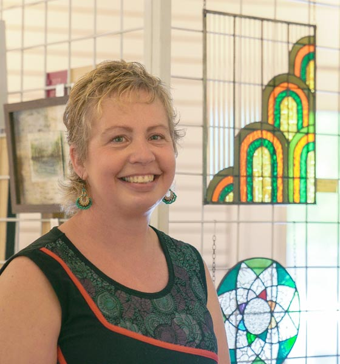

Meet the Artist
Krissy Ryhorchuk
I have always been a creative person but every time I thought about attempting oil painting, the challenge felt too daunting. Little did I know that painting would become one of the greatest joys of my life.
I started painting with oils in 2019 and since then I've learned that I most enjoy using small brushstrokes and minimal paint. I tend to blend my colors, creating a fairly realistic representation of my reference. So much so, that people are often surprised to hear that my work is a painting and not a photograph. I do photograph my work however so that I can create prints and greeting cards.
My inspiration mainly comes from nature. I enjoy painting animals, plant life, and landscapes. I'm particularly obsessed with anything to do with mushrooms so don't be surprised if that's what you see me displaying lots of in the future!
My grandmother, Beulah, was an artist and I love that I'm following her footsteps and using the creativity that she passed down to me. I think of her and the impact she's had on my life every time I sit down at her old easel to paint.
The way oil paint moves on the canvas is like magic to me. I love that it is forgiving and that I can come back to my easel after many distractions or even entire days and just pick up where I left off. Losing myself in the painting process is so much fun. I do however need to set timers for myself so that I remember to stand up to stretch, feed myself, my three children and our dog, or get to bed!
When I create art, I feel like I'm exactly where I was meant to be.